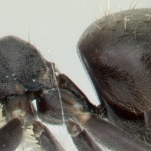
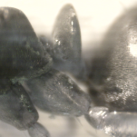
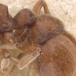

" onclic="location.href='technomyrmex_ergate.html';" value="Technomyrmex" tabindex="8">
" style="cursor:help;">(PE) une partie distincte ;" : "in one distinct part;" ?>
(Dolichoderinae)
Technomyrmex sp.
Technomyrmex albipes
Technomyrmex gobbosus
Technomyrmex sp. 1

AntWeb
(Dolichoderinae)
Technomyrmex sp.
Technomyrmex albipes
Technomyrmex gobbosus
Technomyrmex sp. 1

AntWorld.org
" value="Poneromorphes 2" onclic="location.href='amblyoponinae_ergate.html';" tabindex="10">
" style="cursor:help;">(PE) une partie ;" : "in one part;" ?> " style="cursor:help;">seg1
" style="cursor:help;"> PE seg1 & seg2 seg2 & seg3
" style="cursor:help;"> PE seg1 & seg2

AntWeb
- " style="cursor:help;">(PE) ,
- " style="cursor:help;">PPE , pas d'étranglement du gastre" : "AND no strangulation of gaster" ?>